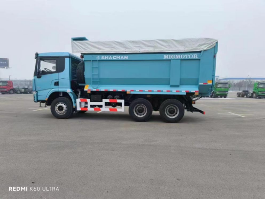

Direct answer: This guide is for overseas buyers evaluating the SHACMAN 6x4 dump truck for Guinea. The photo, title and article all refer to the same vehicle type, and final specifications should be confirmed according to the order.
Quarry work needs the right body
For Guinea quarry and construction sites, the buyer should confirm material type, density, particle size and loading equipment before choosing the dump body. A wrong body can reduce productivity or increase repair cost.
What the photo shows
The image shows a SHACMAN 6x4 dump truck with a covered dump body. Because exact final configuration depends on order, the article focuses on buyer checks rather than claiming fixed online specifications.
Route and tyre decisions
Tell Andy whether the truck works on quarry roads, paved roads or mixed terrain. Slopes, rain season, road base and daily distance influence tyre choice, suspension discussion and spare-parts planning.
Inspection list
Before shipping, ask for photos of cab, dump body, hydraulic cylinder, tyres, chassis, nameplate and loading process. This gives the buyer a better record and supports future service communication.
- destination country, port and quantity;
- cargo or jobsite use, road condition and daily work cycle;
- target payload, body or tank volume, and local registration limits;
- preferred delivery term, inspection request and spare-parts needs.
Frequently asked questions
Can the dump body be changed?
Yes. Body type, size and steel thickness should be discussed according to material and route.
Is this article about a chassis only?
No. The image and article are about a SHACMAN dump truck with dump body.
What should Guinea buyers send first?
Send material, payload target, road condition, quantity, port and expected delivery time.
Related product page: SHACMAN 6x4 dump truck. For price and configuration, use the RFQ form or WhatsApp.
Request a configuration quotation
Andy can help compare configuration, shipping and inspection details for your market.